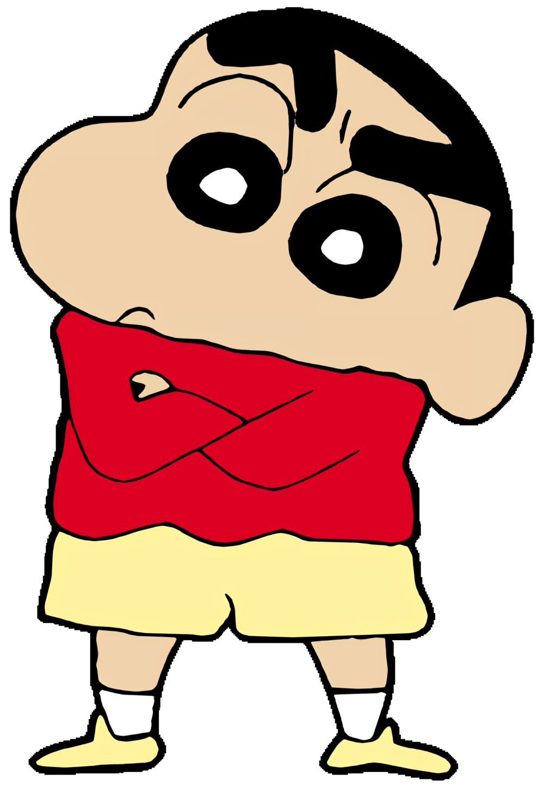

Shin, is the protagonist of Crayon Shin-chan. He is the son of Hiroshi and Misae. His nickname is "Shin-chan" Nohara and he is Himawari's brother, a kindergarten-aged boy whose antics are the basis for the series. He is 5 years old and yet acts overtly mature. In general, he is brutally honest, highly curious, and has no shame whatsoever. Ironically, there have been several instances in which Shinnosuke's own crazy antics actually solved the problems of those around him. Whether this is the result of his own or purely accidental is debatable. Adding to that, he also displays a surprising amount of talent and ability in various activities (running, surfing, kendo, fishing, skiing, swimming and others).
He is often involved in a running gag of pulling down his pants to reveal his buttocks and dance in the process with an accompanying original song (known as "Ass dance" in the Funimation English dub). His affectionate name by relatives is Shin-chan. He is five years old and loves chocolate biscuits of the brand "Chocobi" and a TV superheronamed "Action Mask", but he dislikes green peppers. He always take care of his sister, Himawari. He inherited more genes from his mother than his father. He is lethargic, loves to eat and sleep, stingy, stubborn (a trait that passed down from his maternal grandfather to his 2 aunt and mother and his mother passed down to him), imagining things, cannot resist good things, opinionated and brazen which is just like his mother while the only thing same with his father is likes to watch and flirt pretty young ladies. Both Shin-chan and his sister's appearance look more like their mother. He is a very good singer and pretty good baseball and football player. He learned photography from his aunt Musae. He always takes care of his sister, Himawari. Sometimes he changes the actual words, making it very funny. For example, promise becomes promotion etc. He often exhibits deep affection for his best friend, Kazama. Some of his strange activities include dressing up (often as an animal). He also causes trouble for others and then criticizes their efforts in covering for him. In general, he is outspoken and very curious. He has little to no shame.